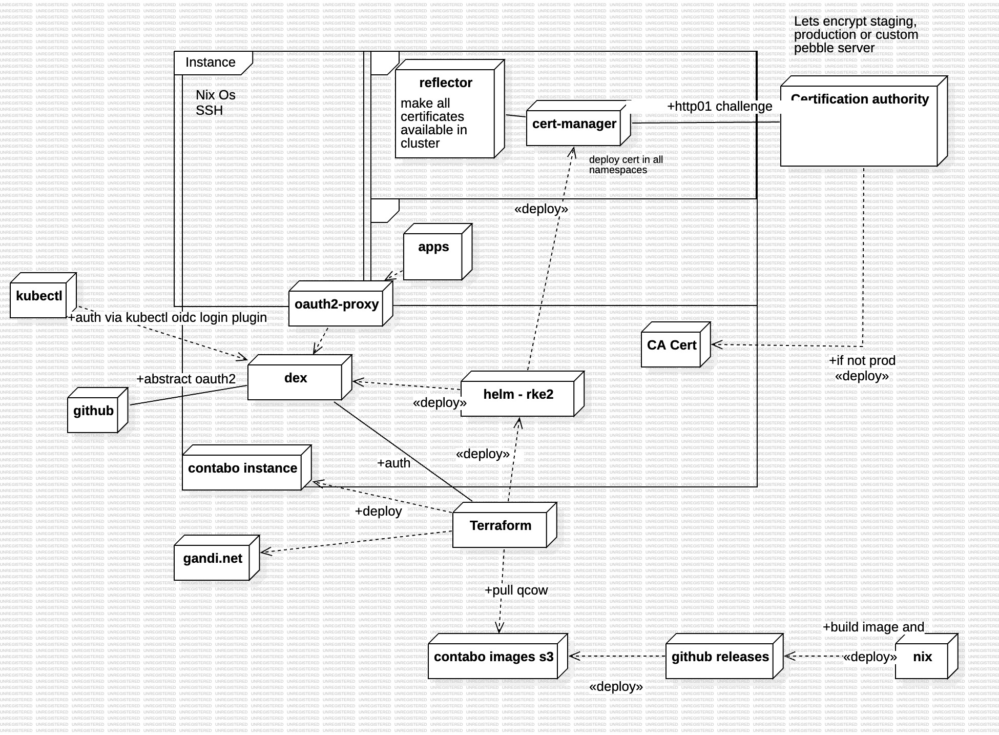

Print Site
Plateforme¶
Architecture¶

Requirements¶
Note: You could easily adapt terraform to use another provider, it just needs to support
user_datawith a cloud-init compatible syntax.
Applying¶
Follow the steps in README.md to apply the infrastructure.
Index¶
Install PaaS for debug on a single machine¶
This PaaS solution targets a contabo VPS or a local machine with libvirt. This one will be based on kubernetes for the containerization and dex for the k8S accesses and an oauth proxy for hosted web apps.
The optics of this tooling will follow :
-
The principle of immutable infrastructure with the idea of recreating rather than updating. Thus we will use ready linux iso to deploy the kubernetes / waypoint platform directly on a server.
-
The principle infrastructure as code (IaC) by keeping all the specification of our infrastructure in configurations and scripts. We will also use basic tests of our configurations.
For this we will use a technical base composed of :
rke2A Kubernetes distribution built for production workloads. It is a CNCF-certified Kubernetes distribution that provides a simple and easy-to-use installation process, as well as a number of features that make it well-suited for production environments.- Nix Os to create iso images of linux machines
- Terraform to control many cloud platforms like Gandi, Contabo, GitHub, kubernetes...
Note : Here we are only using single node mode
Secure ssh connections¶
After applying infrastructure to terraform you will be able to log in ssh with :
bash
ssh user@device-name
Help¶
FAQ¶
I tried several times the vm provision with different configurations forcing me to apply / destroy the stack several times. However, now I can't access the url with a dns error ?
It is probably the dns cache that returns the ip entry of an old vm because the time to live has not yet expired. For that in chrome we must clean this cache to make as if we had never been on the site. In your chrome browser chrome://net-internals/#dns do a "clear host cache" and try again.
Also you can use a global flush cache if it still doesn't work:
For real world testing, it's best to use different
dex_hostnameandpaas_hostnameentries that you don't use for one environment (staging or production).
Kubernetes on Vscode¶
To consolidate the debugging of our dev ops environment we can integrate our kubernetes cluster into the vscode IDE.
We will fetch the kubeconfig in our container that embeds K3s and the cluster.
Copy the kube config k3s with :
sh
docker cp node-0:/etc/rancher/rke2/rke2.yaml ~/.kube/config
If you don't have kubectl locally:
Then we check with kubectl cluster-info which should give us the information of the k3s node.
Then on vscode use these user parameters to see and use the cluster¶
To show the path to home
cd ~ && pwd && cd -.vscode/settings.json
json "vs-kubernetes": { "vs-kubernetes.knownKubeconfigs": [ "<path-to-home>/.kube/config" ], "vs-kubernetes.kubeconfig": [ "<Path-to-home>/.kube/config" }
And there you have access to an interface to control your cluster directly from vscode. Use this json configuration as much as you want in your application repositories to have a production-like experience.
Terragrunt cache download issues¶
error downloading 'file:///Users/loic/github.com/loic-roux-404/k3s-paas': open ../../../../../../.terragrunt-cache/Z69vkGsFyePH0e_F_c6nMmeBn8M/cyRBXgCPjBPxdp5zNnk4giC1NbU/result/Library/.terragrunt-source-manifest: permission denied
You've just initialized your nix darwin environment and result/ folder is owned by root. You can delete this folder or force rights on $USER to fix this.
Sources¶
Platform Architecture¶
Overview¶
This platform is a mono-repo that provisions and manages a Kubernetes-based PaaS across two operational modes: local (KVM/libvirt on the operator workstation) and cloud (shared VPS infrastructure, e.g., Contabo/Hetzner).
Component Map¶
┌─────────────────────────────────────────────────────────┐
│ Operator Workstation (nix-darwin / NixOS) │
│ ┌─────────────┐ ┌──────────────────────────────────┐ │
│ │ nix devShell│ │ Terragrunt CLI │ │
│ │ SOPS/age │ │ → local profile → libvirt │ │
│ │ kubectl │ │ → cloud profile → VPS provider │ │
│ └─────────────┘ └──────────────────────────────────┘ │
└─────────────────────────────────────────────────────────┘
│ │
▼ ▼
┌─────────────────┐ ┌───────────────────────┐
│ Local KVM Lab │ │ Cloud Infrastructure │
│ libvirt VMs │ │ VPS Nodes (NixOS) │
│ K3S cluster │ │ RKE2 cluster │
└────────┬────────┘ └──────────┬────────────┘
│ │
▼ ▼
┌─────────────────────────────────────────────────────┐
│ Kubernetes Platform Layer │
│ cert-manager │ ingress-nginx │ Prometheus stack │
│ RBAC bases │ NetworkPolicies │ Operators │
└─────────────────────────────────────────────────────┘
│
▼
┌─────────────────────┐
│ Applications │
│ kubernetes/apps/ │
│ GitOps (Flux/Argo) │
└─────────────────────┘
State Isolation¶
Each terragrunt/environments/<env>/<stack> is an independent Terraform root.
No state is shared across environments or stacks. Cross-stack outputs use
Terragrunt dependency {} blocks exclusively.
Deployment Phases¶
Phase 0: Bootstrap¶
bash
git clone git@github.com:loic-roux-404/plateforme.git
cd plateforme
bash scripts/bootstrap.sh
nix develop # or: direnv allow
Update .sops.yaml with your Age public key printed by bootstrap.
Phase 1: Secret Setup¶
```bash
Create plaintext YAML, then encrypt:¶
cat > /tmp/cluster-local.yaml <<EOF node_token: "$(openssl rand -hex 32)" EOF
sops --encrypt \ --age $(grep 'public key' ~/.config/sops/age/keys.txt | awk '{print $4}') \ /tmp/cluster-local.yaml > secrets/local/cluster.sops.yaml
Verify:¶
sops --decrypt secrets/local/cluster.sops.yaml ```
Phase 2: Network¶
bash
bash scripts/plan.sh local network
bash scripts/apply.sh local network
Phase 3: Control Plane¶
bash
bash scripts/plan.sh local control-plane
bash scripts/apply.sh local control-plane
virsh list --all # verify VMs are running
Phase 4: Platform Services¶
bash
bash scripts/kubeconfig.sh local
kubectl get nodes # must show Ready
bash scripts/plan.sh local platform-services
bash scripts/apply.sh local platform-services
Phase 5: Kubernetes Base Manifests¶
bash
kubectl apply -k kubernetes/clusters/local
kubectl get ns # verify namespaces created
Phase 6: App Delivery¶
Deploy applications to kubernetes/apps/ and configure Flux or Argo CD
to watch that path. See kubernetes/operators/flux/ for bootstrap.
Cloud Environment¶
Repeat phases 2–6 with env=cloud. Requires:
- CONFIRM_CLOUD_APPLY=true
- Remote backend configured (TF_VAR_backend_bucket, TF_VAR_backend_region)
- Cloud provider credentials in environment
Local Development and Debug Flow (libvirt)¶
Prerequisites¶
- libvirt + KVM installed and
qemu:///systemaccessible - Your user in the
libvirtgroup:sudo usermod -aG libvirt $USER - Nix devShell active:
nix develop - Age key generated and
.sops.yamlupdated
Iterative Debug Cycle¶
Edit module → plan → inspect diff → apply → SSH into VM → test → repeat
```bash
Enter shell¶
nix develop
Decrypt secrets¶
bash scripts/decrypt-secrets.sh local
Plan network¶
bash scripts/plan.sh local network bash scripts/apply.sh local network
Plan control plane¶
bash scripts/plan.sh local control-plane bash scripts/apply.sh local control-plane
Check VMs¶
virsh list --all virsh domifaddr plateforme-local-cp-0
Merge kubeconfig¶
bash scripts/kubeconfig.sh local kubectl get nodes -o wide
Apply K8s base layer¶
kubectl apply -k kubernetes/clusters/local
Run smoke tests¶
bash tests/integration/smoke-test.sh local
Tear down (safe — local state only)¶
terragrunt destroy --terragrunt-working-dir terragrunt/environments/local/control-plane terragrunt destroy --terragrunt-working-dir terragrunt/environments/local/network ```
VM Console Access¶
```bash virsh console plateforme-local-cp-0
Ctrl+] to exit¶
```
Debugging cloud-init¶
```bash virsh console plateforme-local-cp-0
Inside VM:¶
sudo cloud-init status --long sudo journalctl -u cloud-init ```
libvirt Network Inspection¶
bash
virsh net-list --all
virsh net-dhcp-leases plateforme-local
Secret Management (SOPS + Age)¶
Key Concepts¶
- Age generates a keypair. Public key goes in
.sops.yaml. Private key stays local (~/.config/sops/age/keys.txt). - SOPS encrypts/decrypts files using the Age public key. Encrypted files are safe to commit.
.secrets/is gitignored — decrypted values live here only during active sessions.
Key Lifecycle¶
Generate operator key¶
bash
mkdir -p ~/.config/sops/age
age-keygen -o ~/.config/sops/age/keys.txt
cat ~/.config/sops/age/keys.txt # note the public key line
Add key to .sops.yaml¶
Edit .sops.yaml and replace age1REPLACE_WITH_... with your public key.
Encrypt a new secret file¶
bash
cat > /tmp/mysecret.yaml <<EOF
my_key: my_value
EOF
sops --encrypt --age age1YOURPUBLICKEY /tmp/mysecret.yaml > secrets/local/mysecret.sops.yaml
Decrypt for use¶
```bash bash scripts/decrypt-secrets.sh local
Output: .secrets/local/mysecret.yaml¶
```
Edit in-place¶
bash
sops secrets/local/cluster.sops.yaml
Rotate key¶
```bash sops updatekeys secrets/local/cluster.sops.yaml
Add new recipient to .sops.yaml first¶
```
CI Key¶
Store the CI Age private key as SOPS_AGE_KEY GitHub Actions secret.
Add the corresponding public key to all path_regex entries in .sops.yaml.
Rules¶
- Never commit
.secrets/— it is gitignored - Never hardcode secrets in HCL, YAML, or shell scripts
- All secret files must end in
.sops.yaml detect-secretspre-commit hook will block plaintext leaks
Runbooks ↵
Runbook: Add a New Terraform Module¶
- Create
terraform/modules/<noun>-<noun>/ - Add
main.tf,variables.tf,outputs.tf— no backend block - Add
README.mddescribing inputs, outputs, and example usage - Reference the module from the appropriate
terraform/stacks/<layer>/main.tf - Wire inputs in the relevant
terragrunt/environments/<env>/<stack>/terragrunt.hcl - Run
bash tests/validate/run.sh— must pass before committing - Add
mock_outputsin any Terragruntdependency {}blocks that reference new outputs - Commit with
feat(terraform): add <module-name> module
Runbook: Teardown Local Environment¶
Full teardown order (reverse dependency)¶
```bash nix develop
1. Platform services¶
terragrunt destroy --terragrunt-working-dir terragrunt/environments/local/platform-services -auto-approve
2. Control plane¶
terragrunt destroy --terragrunt-working-dir terragrunt/environments/local/control-plane -auto-approve
3. Network¶
terragrunt destroy --terragrunt-working-dir terragrunt/environments/local/network -auto-approve
4. Verify no stray domains¶
virsh list --all
5. Clean local tfstate¶
rm -rf tmp/tfstate/ ```
Partial teardown (control plane only)¶
bash
terragrunt destroy --terragrunt-working-dir terragrunt/environments/local/control-plane -auto-approve